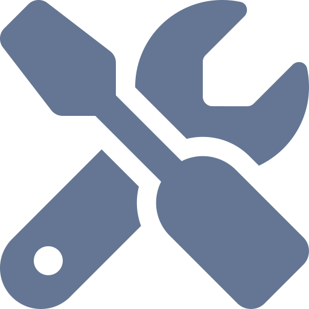

| Progress | Feature |
|---|---|
| Wide variety of question types | |
| Ability to use latest survey results in the survey itself | |
| Pause database connection | |
| Conditionally display questions | |
| Conditionally skip to pages | |
| Start survey from a specific page (helpful when editing) | |
| Show all pages at once (helpful for editing or printing out whole survey) | |
| Require specific questions be answered | |
| Require all questions be answered | |
| Create a random numeric completion code | |
| Time stamps recorded for each question and page interaction | |
| Auto scroll according to the answering progress | |
| Progress bar bar that updates on each question interaction | |
| Customizable progress bar color | |
| Customizable progress bar position | |
| Markdown formatting for options and buttons | |
| Support for bootstrap themes | |
| Customizable scss theme file | |
| Pass parameters through the url, e.g. to track user IDs | |
| Redirect users to an external url | |
| Store session ID in browser cookies to store user progress if they refresh the page | |
|  | Admin page with password login to preview / download data, pause survey, etc. |
| Form validation (limit input based on question type) |
Welcome to your first surveydown survey!
We recommend reading the Getting Started page to get a sense of how to use surveydown. The rest of the documentation covers more details on how to use surveydown.